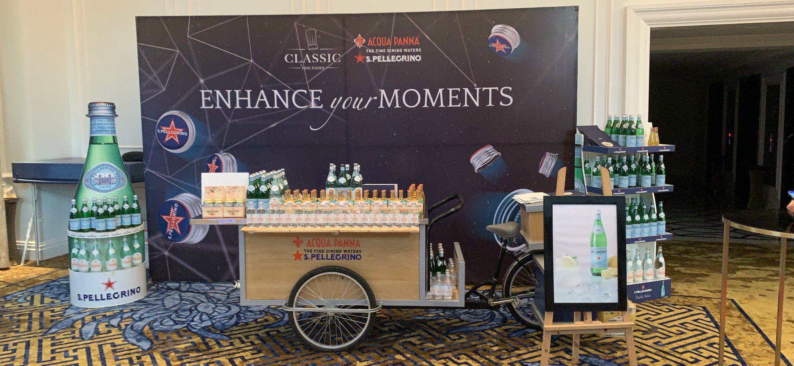

Excel
Formulas, sorting, filtering, and organizing data.
Marketing & Data Analyst
Hi, I'm VY NGUYEN — a Marketing & Data Analyst who enjoys finding patterns, solving business problems, and turning numbers into useful stories.
01 / A little about me
I studied a Bachelor of Commerce in Finance & Marketing at Curtin University, and previously worked as a marketing analyst. I'm building a body of work at the intersection of marketing and data — helping teams see where spend goes, what a campaign delivered, and what to do next.
I like breaking complex questions into manageable steps, checking the quality of the data, and explaining what the results mean in plain language. Each project here includes the approach, the key numbers, and what they show.
02 / My toolkit
Tools and methods I use to clean data, find patterns, and communicate results clearly.
Formulas, sorting, filtering, and organizing data.
Spreadsheet analysis and dashboard work.
Queries, filtering, aggregations, and joins.
Dashboards and data visualization.
Dashboards and data visualization.
Tracing a result back to what drove it.
Checking quality and getting data ready to use.
Making metrics and trends easy to read.
Seeing where spend goes and what was declined.
03 / Selected work
Two projects explored with data: a marketing cost audit and a campaign-performance analysis.
Where does marketing influencer spend go, and how much quoted spend was declined?
SQL and a Google Sheets dashboard, using anonymized beauty brand data covering 22 partnerships.
SQL analysis of 2,240 customer records from a public Maven Analytics / iFood CRM campaign dataset. Compared five historical campaigns and a last-campaign offer, product mix, and purchase-channel counts, with data-quality issues documented rather than silently dropped.
Event planning
I am an in-house event planner at Classic Fine Foods, where I plan events for our own brand portfolio.

Four brand activations: a premium beverage booth at Vietnam Food & Beverage Conference 2022 (18 February, Mai House Saigon Hotel); Poppin' Corks Wine Fest at Wink Hotel Saigon Centre (26 February 2022); The Perfect Mix by Monin at InterContinental Saigon (26 May 2022); and a La Maison du Fromage cheese tasting.
04 / Say hello
I'm happy to connect about Marketing Analyst and Data Analyst roles, and to talk through the work in this portfolio.
Email me ↗ vynguyen.ivyng@gmail.com
Web app
Social Media Office.
A mini pixel-art office web app for managing four social media bots.
Social Media Office
A mini pixel-art office web app where I manage four social media bots: fendi (research), dior (content & strategy), prada (photo), and gucci (Threads). I assign tasks, approve posts, and review weekly metrics. All data in the app is fake sample data.